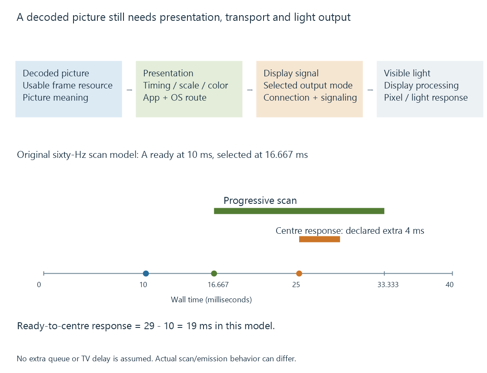

The path from decoded frames to the screen
A displayed picture results from decoding, presentation scheduling, color processing, output transport and the display’s own light-producing response.
A movie can Direct Play from Emby Server and still pass through several transformations before its pictures become light. Direct Play describes delivery of the original media to a compatible client. The client then decodes and presents it through its device’s display system.
That distinction matters when a movie plays without buffering but has uneven motion, incorrect colors or a short blackout at startup. Those symptoms can arise after the server has delivered the right bytes.
A picture changes representation along the route
The decoder reconstructs a picture in a memory layout such as YCbCr planes. A renderer prepares it for the presentation surface: perhaps scaling it, converting its color representation, composing subtitles or placing it inside the app interface.
The operating system can combine that surface with other windows. An output engine produces the selected display signal. A connected TV or monitor receives that signal and can apply additional processing before driving its pixels.

These operations can occur on dedicated hardware, GPU processing or other implemented paths. Frame surfaces describe the storage and ownership relationships; a compatible decoder surface is not automatically a finished display signal.
For example, a 1920 × 1080 source shown on a 3840 × 2160 panel needs a spatial mapping somewhere. If the client sends 1080p, the display may scale it. If the client sends 2160p, scaling occurs earlier. The panel’s resolution alone does not identify the scaler.
Four different clocks meet at presentation
| Clock or interval | What it describes |
|---|---|
| Programme timestamps | When each picture belongs in the movie |
| Decode/processing completion | When its usable result becomes ready |
| Presentation/refresh schedule | When the display system can select or scan that result |
| Pixel response and light emission | When the visible output changes |
A picture with a presentation timestamp of ten seconds is not required to spend ten seconds in the decoder. The player uses a playback clock to relate programme time to the current presentation deadline.
Likewise, “60 Hz” describes a refresh schedule, while “24 fps” describes source-picture timing. A player must map one to the other. Frame-rate matching develops that mapping.
The audio clock can also guide synchronization. Delaying video while audio advances creates another relationship to manage; increasing server throughput does not automatically correct it.
Ready, selected and visible are different moments
Consider an original simplified 60-Hz model. Refresh boundaries occur at 0, 16.667 and 33.333 milliseconds. Picture A becomes usable at 10 ms.
Assume the presentation system selects A at the next boundary, then scans the picture progressively from top to bottom over one refresh interval:
| Event | Model time |
|---|---|
| A becomes ready | 10 ms |
| A is selected for scanout | 16.667 ms |
| Centre of A is scanned | 25 ms |
| Bottom of A is scanned | 33.333 ms |
If the centre pixels have a declared four-millisecond transition after their new drive begins, their modeled response point is 29 ms. Ready-to-centre-response time is therefore nineteen milliseconds.
This exercise assumes a continuous scan, no extra queued pictures, no TV processing delay and the stated response interval. A real panel may buffer, scan differently, illuminate in pulses or have transitions that differ by color level. It is a timing explanation, not a latency measurement.
An extra presentation queue can add time before selection. Display processing can add time after reception. A quoted pixel response does not include either automatically.
Color interpretation travels with the picture
The source’s transfer function, primaries, matrix and range guide its interpretation. The renderer and output system need a compatible destination representation. The display needs the intended signal interpretation.
Ten-bit storage does not, by itself, make the result HDR. A PQ picture interpreted through an SDR transfer function can look wrong even though the decoder reconstructed its values correctly.
Display color management explains the application/OS relationship. HDMI HDR signaling separates source metadata, sink capability and the signal actually being sent.
Evidence should identify its stage
An Emby playback report showing Direct Play establishes the delivery choice. A hardware decoder report establishes a reconstruction path. The operating system’s selected output mode describes the display connection. A TV’s signal information describes what that input recognizes.
Together these observations locate the route. None replaces all the others.
When a mode change produces a startup blackout, the useful question is whether the output is being re-established at that moment. When a pan has regular uneven steps, the useful question is whether source pictures receive equal display durations. A stall while the next programme interval is unavailable is a different observation again.
See Also
- Frame-rate matching at the display
- Display color management
- HDMI video transport
- Hardware frame surfaces and GPU contexts
- How a transcoding pipeline works